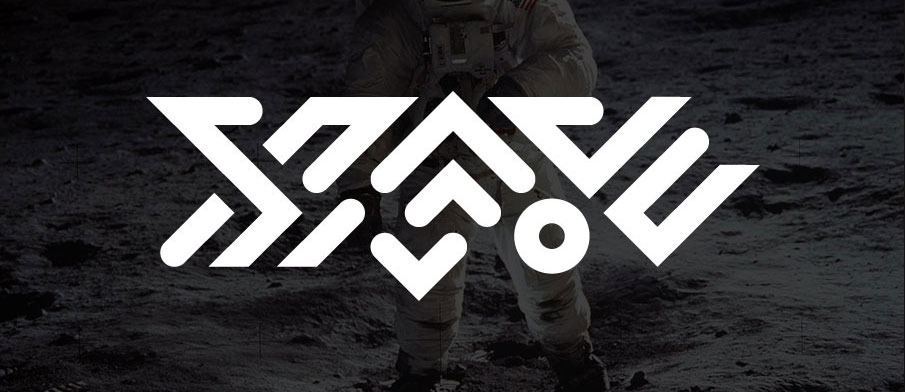
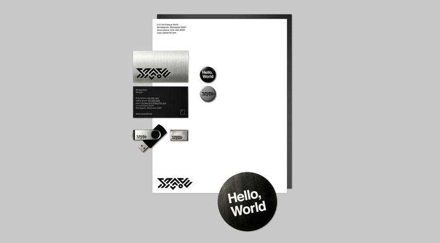
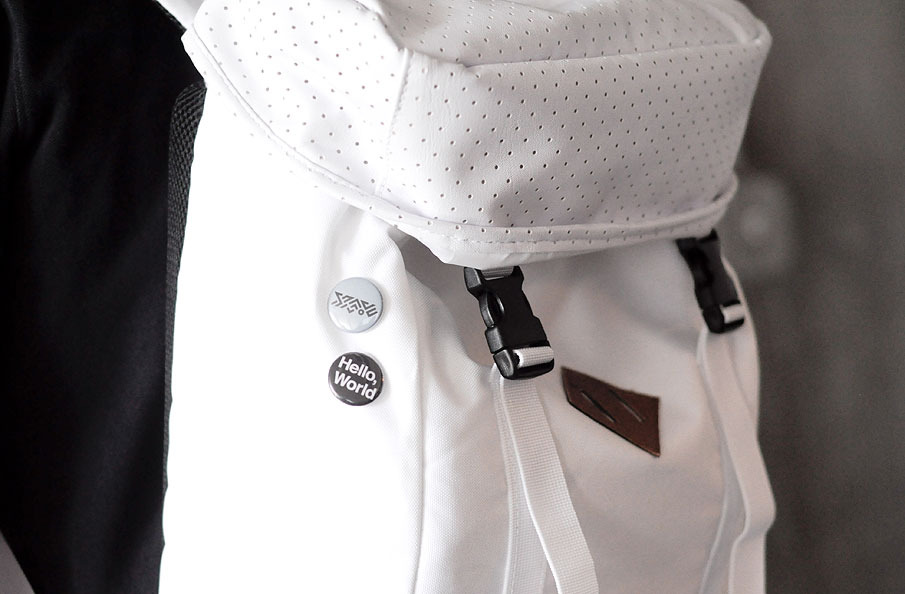
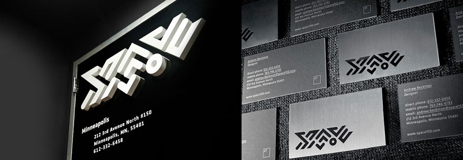

space150 v27
Every 150 days the innovative mid-west agency space150 updates their entire corporate identity from business cards to website to environmental design on the agency’s doors. The futuristic branding for v27 was created in collaboration with designer and entrepreneur Taylor Pemberton. If you visit space150’s site now you’ll see they recently moved on from v27 to v28.
Additional credits on the project from the space150 team:
Design - Andrew Ridgeway, Michael Seitz, and Matt Kuglitsch
UX - Shawn Kardell
Created by - Courtney Davis, and Heather Chau
Written by - Jon Resheske
Video production - ThreeVolts
Creative Direction - Billy Jurewicz, and Ned Wright
Thanks Ned for the additional credits over email!